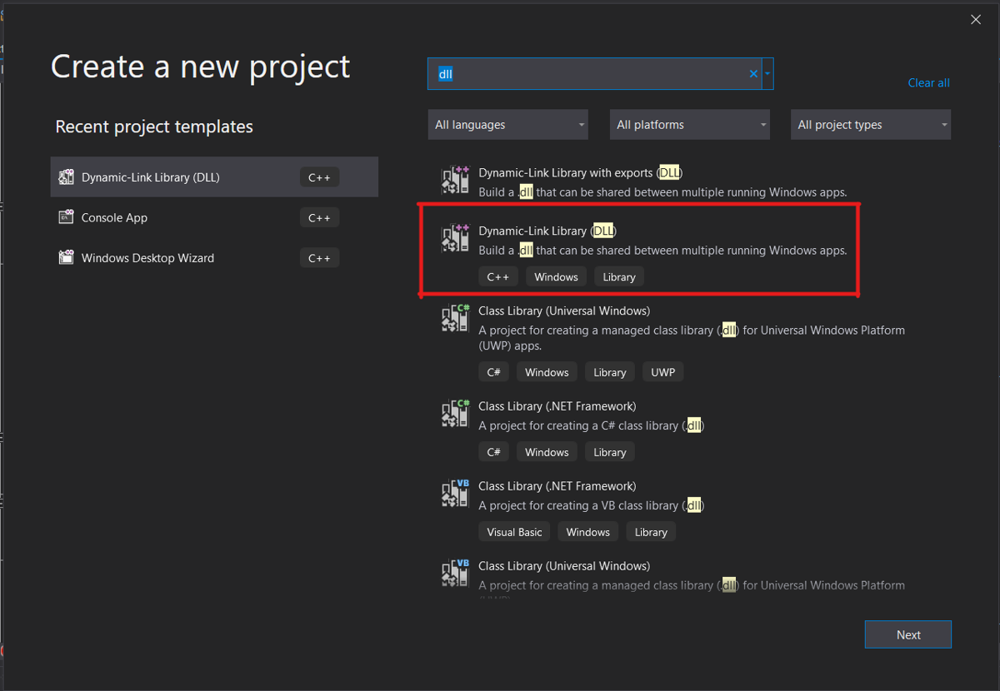
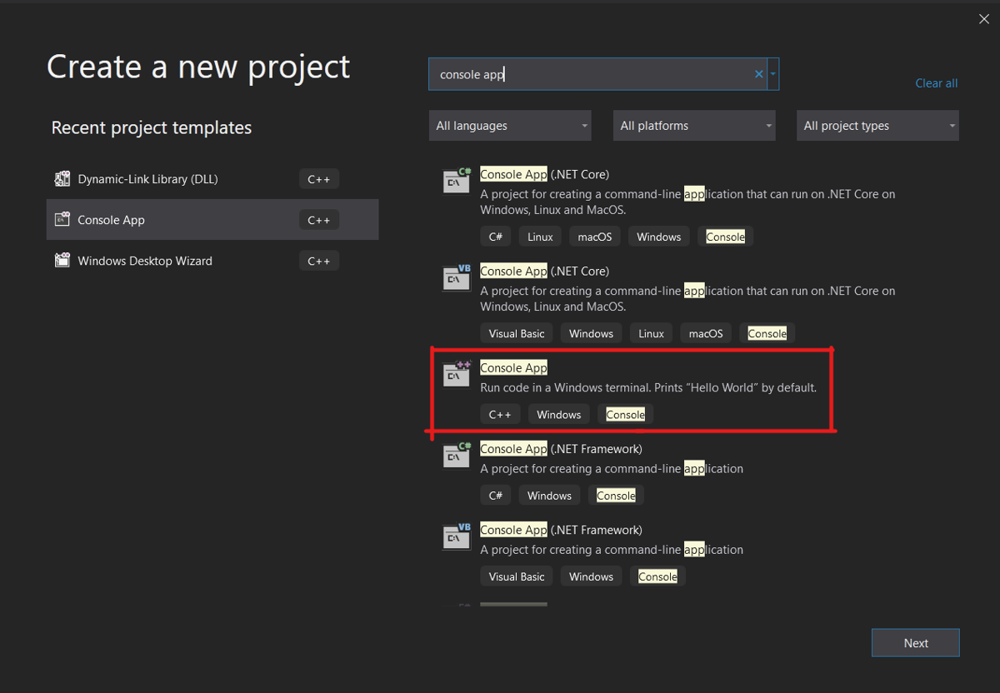
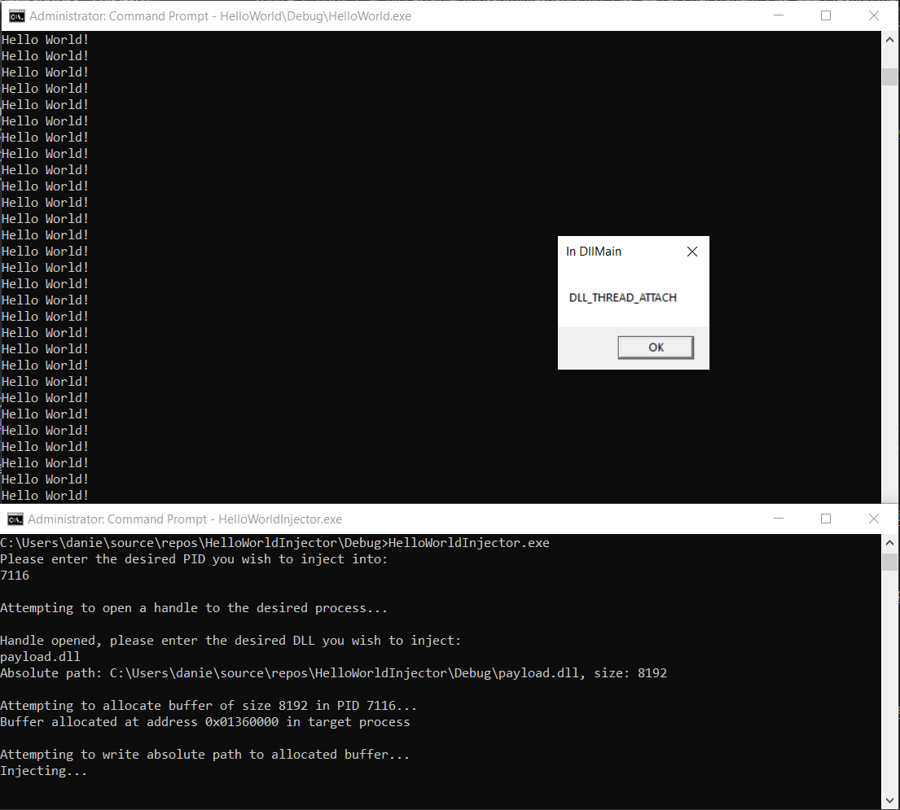

The accompanying source files for this post are on GitHub.
Process injection is the act of writing arbitrary code into an already-running process and executing it. It is used frequently by red teamers, malware authors, and game hackers because it is a powerful detection evasion technique, can gain you read/write/execute access to sensitive information residing in the target process, and allows you to alter that process's behavior. As a reverse engineer, I have looked at quite a few process injection techniques, and loosely understand how they work, but I have never had to implement one.
There are myriad ways to inject into a running process. Every malware author seemingly knows them, but whenever I google "how to inject into a process", I get a bunch of articles that are bogged down in the weeds where they don't need to be, hand-wavey at parts that I felt warrant more explanation, and none of them linked enough references to the Windows API docs. After reading through a couple of them, this is my attempt to write the article I would have wanted to find. This is the absolute simplest example of process injection I could write and execute on a windows machine.
Dynamic Link Libraries, or DLLs, are executables designed to contain library code that can be used by multiple programs. One of the ways that a program can call functions from a DLL is via run-time dynamic linking. Run-time dynamic linking which is when a DLL is loaded into the process space of program so that its exported functions can be called. This is great for us, because it means DLLs are designed from the get-go to be mapped into the memory of processes and executed! To learn more about DLLs, the microsoft docs are here.
I won't cover debugging in this tutorial, but if you want an easy-to-follow walkthrough of x64dbg check out this tutorial from OALabs. Full disclosure, I work with the guys who run OALabs, but I think they make super high quality tutorials/tools that I use and wholeheartedly recommend to beginner reverse engineers.
For this project, you will end up creating two different projects within Visual Studio:
When creating a new project in Visual Studio, search "dll" in the top bar, and select the basic DLL project template.

Once you have selected a name and filepath for your project, you will be presented with the following code:
// dllmain.cpp : Defines the entry point for the DLL application.
#include "pch.h"
BOOL APIENTRY DllMain( HMODULE hModule,
DWORD ul_reason_for_call,
LPVOID lpReserved
)
{
switch (ul_reason_for_call)
{
case DLL_PROCESS_ATTACH:
case DLL_THREAD_ATTACH:
case DLL_THREAD_DETACH:
case DLL_PROCESS_DETACH:
break;
}
return TRUE;
}
This project template contains the skeleton of the DLLMain method, which is the entry point for a DLL. It is called in 4 scenarios, as evidenced by the switch statement. For more info on each of the 4 scenarios, refer to the documentation for DLLMain.
For a simple payload, call MessageBox for each case in the switch so you can see when DllMain gets called.
// dllmain.cpp : Defines the entry point for the DLL application.
#include "pch.h"
#include <Windows.h>
BOOL APIENTRY DllMain( HMODULE hModule,
DWORD ul_reason_for_call,
LPVOID lpReserved
)
{
// NOTE:
// You can execute code here as well, and it will execute
// regardless of the value of ul_reason_for_call
switch (ul_reason_for_call)
{
case DLL_PROCESS_ATTACH:
MessageBox(
NULL,
(LPCWSTR)L"DLL_PROCESS_ATTACH",
(LPCWSTR)L"In DllMain",
MB_OK
);
case DLL_THREAD_ATTACH:
MessageBox(
NULL,
(LPCWSTR)L"DLL_THREAD_ATTACH",
(LPCWSTR)L"In DllMain",
MB_OK
);
case DLL_THREAD_DETACH:
MessageBox(
NULL,
(LPCWSTR)L"DLL_THREAD_DETACH",
(LPCWSTR)L"In DllMain",
MB_OK
);
case DLL_PROCESS_DETACH:
MessageBox(
NULL,
(LPCWSTR)L"DLL_PROCESS_DETACH",
(LPCWSTR)L"In DllMain",
MB_OK
);
break;
}
// NOTE:
// You can execute code here as well, and it will execute
// regardless of the value of ul_reason_for_call
return TRUE;
}
After building the project (ctrl+b), you can test it with rundll32.exe. You need to call an exported function to run your DLL, but since the code above does not export any functions you can just call a bogus function #1:
C:\Windows\System32\rundll32.exe <path to built DLL> #1
This will cause an error since you don't have an exported #1 function, but you can still observe the various MessageBoxes as they trigger.
Great! Now that you have a payload, on to the injector.
LoadLibrary is a function in the Windows API that will do all of the hard work for us. It loads a DLL into the memory of the calling process and calls DLLMain, all you need to do is get your target process to call LoadLibrary and the rest is taken care of!
LoadLibrary requires the path of the DLL it is loading as an argument, so you need to write your payload DLL's absolute path into your target process. After that string exists within the address space of your target process, the final step is to get the target process to execute LoadLibrary with that string as an argument.
To do this, your injector needs to perform just 7 api calls:

To make my injector as easy to follow as possible, I include a bunch of print statements and user prompts, but none of that is necessary. You could hardcode the PID and DLL path if you want, or input them as arguments when you call you injector from the commandline. For my example code, I prompt the user and read cin. I also tried to make my variables as self explanatory as possible, but if you don't know what a variable is, check one of the earlier steps to see where it is defined. You can also see the whole source here.
I open my process handle with the access rights PROCESS_ALL_ACCESS, which is the most liberal access rights option available. A good exercise would be to figure out the minimal access rights needed from here to still make this injector to work.
DWORD PID;
std::cout << "Please enter the desired PID you wish to inject into:\n";
std::cin >> PID;
HANDLE processHandle;
std::cout << "Attempting to open a handle to the desired process...\n";
// https://docs.microsoft.com/en-us/windows/win32/api/processthreadsapi/nf-processthreadsapi-openprocess
processHandle = OpenProcess(PROCESS_ALL_ACCESS,
FALSE,
PID);
if (processHandle == NULL) {
printf("Failed to open a process for PID %d", PID);
return 0;
}
std::cout << "Handle opened\n"
Something that may trip you up is that some strings used in this injector are wide strings (as opposed to ANSI). In wide strings, each character is allotted 2 bytes instead of one. Notice that absolutePath is set by GetFullPathNameW - the W at the end means that the returned path will be a wide string. If you are noticing strange behavior with you injector, ensure you are handling wide strings correctly. The TEXT() macro can aid you in making sure you are using the correct encoding behind the scenes.
//you must define BUFSIZE as a constant
constexpr DWORD BUFSIZE = 4096;
TCHAR relativePath[BUFSIZE] = TEXT("");
TCHAR absolutePath[BUFSIZE] = TEXT("");
SIZE_T absolutePathSize = 0;
std::cout << "\nHandle opened, please enter the desired DLL you wish to inject:\n";
std::wcin >> relativePath;
// https://docs.microsoft.com/en-us/windows/win32/api/fileapi/nf-fileapi-getfullpathnamew
if (!GetFullPathNameW(relativePath,
BUFSIZE,
absolutePath,
NULL)
) {
printf("Failed to find absolute path for %s", relativePath);
return 0;
}
else {
absolutePathSize = sizeof(absolutePath);
wprintf(L"Absolute path: %s, size: %d\n", absolutePath, absolutePathSize);
}
The memory allocation parameter (i.e. MEM_COMMIT) definitions can be found here.
LPVOID bufferAddressInTargetProcess;
printf("\nAttempting to allocate buffer of size %d in PID %d...\n", absolutePathSize, PID);
// https://docs.microsoft.com/en-us/windows/win32/api/memoryapi/nf-memoryapi-virtualallocex
bufferAddressInTargetProcess = VirtualAllocEx( processHandle,
NULL,
absolutePathSize,
MEM_COMMIT | MEM_RESERVE,
PAGE_EXECUTE_READWRITE);
if (!bufferAddressInTargetProcess) {
printf("Failed to allocate buffer in PID %d\n", PID);
return 0;
}
wprintf(L"Buffer allocated at address %#010x in target process\n\nAttempting to write absolute path to allocated buffer...", bufferAddressInTargetProcess);
// https://docs.microsoft.com/en-us/windows/win32/api/memoryapi/nf-memoryapi-writeprocessmemory
if (!WriteProcessMemory( processHandle,
bufferAddressInTargetProcess,
absolutePath,
absolutePathSize,
NULL )
) {
printf("Failed to write absolute path to allocated buffer at %d\n", bufferAddressInTargetProcess);
return 0;
}
You can pass the handle returned from GetModuleHandle directly into GetProcAddress as this is the only place that handle is used. No point in setting it to a variable.
How come you can find the address of a function you need to call in your target process in the address space of your injector?
The reason that you can call these functions in the address space of your injector instead of needing to do it in your target process is because you can expect the addresses of LoadLibrary to be the same in both processes - this is due to the way that Windows sets up its virtual addressing for processes and shared libraries. This forum thread explains it more succinctly than I can, but once you have the offset of LoadLibrary in your injector's address space you can assume that it will be valid in your target process.
Another "gotcha" to note here is that GetProcAddress returns a the address as type FARPROC, but our next call to CreateRemoteThread will require the address as type LPTHREAD_START_ROUTINE. Since these are both just addresses, you can cast the return value as a void pointer (LPVOID), and then recast it as necessary in the CreateRemoteThread call.
LPVOID loadLibraryAddress;
// https://docs.microsoft.com/en-us/windows/win32/api/libloaderapi/nf-libloaderapi-getprocaddress
// https://docs.microsoft.com/en-us/windows/win32/api/libloaderapi/nf-libloaderapi-getmodulehandlea
loadLibraryAddress = (LPVOID)GetProcAddress( GetModuleHandle(TEXT("KERNEL32.DLL")),
"LoadLibraryW");
Note the casting of loadLibraryAddress as discussed in the step above!
std::cout << "\nInjecting...\n";
HANDLE remoteThread;
// https://docs.microsoft.com/en-us/windows/win32/api/processthreadsapi/nf-processthreadsapi-createremotethread
remoteThread = CreateRemoteThread( processHandle,
NULL,
0,
(LPTHREAD_START_ROUTINE)loadLibraryAddress,
bufferAddressInTargetProcess,
0,
NULL
);
WaitForSingleObject(remoteThread, INFINITE);
return 0;
And with that, you've done it! All that is left is to identify the PID of your target process (I pretty much always have Process Hacker open) and inject away!

Congrats, you have now run code in the address space of another process! In the next tutorial, explore how to modify the behavior of the process you've injected into.
You can find all of the components necessary to recreate this blog here.